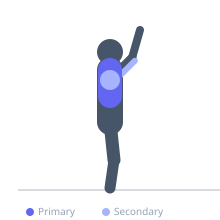

Exercise guide / Weight Plate Pinch Press
Weight Plate Pinch Press
The weight plate pinch press is a unique chest exercise in which two weight plates are pressed together between the palms and pushed overhead or forward. The act of pinching the plates isometrically activates the pectoral muscles throughout the pressing motion, making it an excellent finishing or isolation movement for inner chest development.
Primary muscles
pectoralis major sternal
pectoralis major clavicular
Secondary muscles
deltoid anterior
triceps lateral head
Equipment
Weight Plates

Starting position
- Hold two smooth-faced weight plates sandwich-style between your palms at chest level. Stand or lie on a flat bench.
Setup
- Choose two plates of equal size (10lb plates are common). Smooth faces should be in contact with each other. Grip the outer edges with palms facing inward.
Steps
- Step 1: Squeeze the plates firmly together and hold them at chest level.
- Step 2: Keeping the squeeze constant, press the plates forward (standing) or upward (lying) until the arms are extended.
- Step 3: Hold the top position and intensify the squeeze for 1 second.
- Step 4: Lower the plates back to the starting position while continuing to press inward.
- Step 5: Never release the squeeze between reps.
Coaching cues
- Squeeze the plates like your life depends on it
- Feel the sternum compress on the press
- Don't let the squeeze go — that IS the exercise
Breathing
- Exhale as you press the plates away. Inhale as you bring them back to the chest.
Range of motion
- Press to full arm extension, maintaining the inward squeeze the entire time. Lower under control.
Tempo
- 2-1-2-0
Common mistakes
- Releasing the inward squeeze on the press, allowing plates to slide
- Using plates with rough or ridged outer faces that cut into the palms
- Going too heavy and losing control of the pinch
Safety
- Use smooth-faced steel plates, not bumper plates with raised lips
- Do not use this exercise to failure — dropping the plates could cause injury
- Start with lighter plates until the pinch coordination feels stable
Training
- hypertrophy: 10–20 reps
- endurance: 15–25 reps
- hypertrophy: 3–4 sets
- Rest: {'hypertrophy': 60, 'endurance': 30}